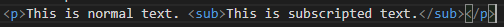

The sub element defines subscription text. This text appears half a character below the normal line. It is sometimes rednered in a smaller font. Subscript text can be used for chemical formuals like H2O.
The sup element defines superscripted text
This is normal text. This is subscripted text.
This is how its coded:
The global attributes are supported.
The event attributes are supported.